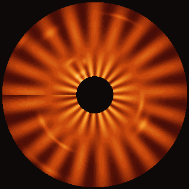
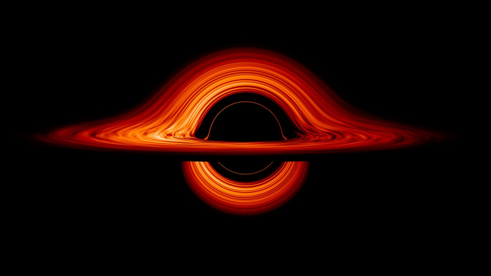
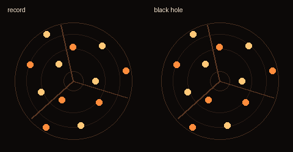
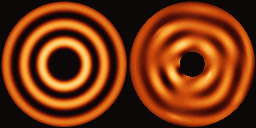
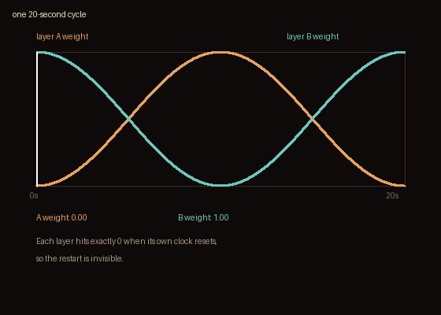
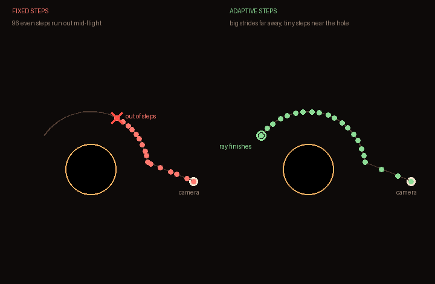
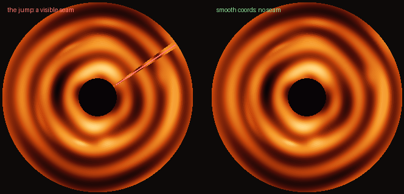

The thin rings on my black hole page are a known graphics bug: the disk spins at different speeds at different distances, which smears its pattern into ultra-thin rings within minutes. Every graphics programmer treats this as a bug to fix. I decided it looks awesome, so I kept it on purpose. In real life it wouldn't look like this at all: a real disk is streaky, churned-up gas spiraling around the hole, not neat grooves. Here's everything I learned building it.
A black hole you can orbit, with the animated ringed disk. Pinch to zoom. Open it on your phone.
Open the black hole →Jonas Javier wrote it up while building his own black hole for the web: give the disk realistic spin and "within minutes the disk turned into concentric rings thinner than a pixel." The inner part of the disk orbits faster than the outer part, so any pattern on it gets stretched into thinner and thinner streaks until they blur into perfect rings. Graphics programmers add extra code specifically to kill this. I kept it in, and I'll tell you why.

Real science pictures don't look like this either. NASA's famous black hole renders show the gas churned into spiral light-and-dark lanes: streaky, not grooved. The black hole in Interstellar is smooth, fading from hot to cool colors. The vinyl-record look is pure style. Which is exactly why it belongs on my page.

The one thing worth getting right is the spin. A real black hole disk doesn't spin like a record. The inner edge orbits way faster than the outer edge. There's a physics rule (Kepler's third law) that says orbit speed drops off as r^(-3/2), so the code draws the disk's pattern in coordinates that spin along with the gas itself:

// Where to look up the pattern: this pixel's angle, minus how far its ring has spun
angle = atan(z, x) - t * OMEGA(r)
// How fast each ring spins: inner rings lap the outer ones (Kepler's rule)
OMEGA(r) = OMEGA_IN * (rIn / r)^1.5Each ring of the disk effectively has its own clock. The pattern is also stretched so it keeps the same look at every distance, from the blazing inner edge to the faint outer edge. Get this wrong and the disk looks like a spinning sticker; get it right and it feels like orbiting gas even before you add any detail. Nobody wants a spinning sticker. Stickers are for water bottles and the back of laptops.
One catch: perfectly round bands can't show spin at all. They look the same from every angle by design. So the disk also has bright knots and spiral streaks that move with the spinning gas. Those are what your eye actually follows as the inner disk laps the outer.

You can't just let t * OMEGA(r) grow forever. The uneven spin keeps piling up and the rings melt into blurry mush: exactly Javier's bug. The fix, found independently by several graphics programmers:

Total twist never builds up past one 20-second cycle, so the bands stay crisp forever. A separate shimmer layer runs on the real clock (not each layer's own clock), which glues the two layers together during the fade instead of showing the seam.
The nastiest bug in the whole build wasn't in how things looked. It was in the structure. The renderer draws the scene by walking light rays forward in fixed steps (dt = 0.14), 96 steps max, covering about 13 units. But the default camera sits 20+ units out. Rays aimed above the shadow ran out of steps while looping around the photon sphere (the zone where light itself orbits the hole). Never caught, never crossing the disk, just giving up. The arcs of bent light above the shadow, the signature Interstellar look, were never drawn at all. My black hole had a blind spot exactly where its best feature should be. The disk looked like a separate lump floating under the shadow.

The fix is steps that adapt: dt = clamp(0.09 * r, 0.035, 0.9). Long strides cover the empty far regions where gravity barely matters; tiny steps handle the intense light-bending near the hole. Same number of steps, but now the bent rays finish their journey, and the arcs appeared. Lesson: when your lighting looks wrong, check whether your rays are even finishing the trip.
There was a sharp diagonal seam across the disk where fine rings suddenly met coarse marbling. Root cause: atan's branch cut. atan measures angles, and it jumps from +180° back to -180° along one line. Any angle multiplier that isn't a whole number (a * 2.2, a * 3.4…) makes the pattern jump at that line, and the line shows up on screen as a diagonal. The fix: build all the angular pattern from smooth looping coordinates, vec2(cos(a), sin(a)), which glide around the full circle with no jump, and keep spiral tilts at whole numbers. If your generated texture has a mysterious straight seam, check your angle math for jumps like this.

Motion does half the work; light does the other half:
(1.00, 0.96, 0.88) cooling through vivid amber to deep red-orange at the outer edge.pow(g, 3): more than twice as bright, glowing hot amber-white against the far side's deep red ember. This is real physics, and it's the biggest reason it reads as a black hole. (Careful: push the tint too blue and the whole disk goes pastel. I learned that one the ugly way.)The photon ring and the arcs of disk bent above and below the shadow aren't drawn on anywhere. They come straight out of the light-bending math itself. Trace the rays through curved spacetime and the lensing just shows up. That's the best kind of graphics programming: you build the physics and the beauty is a side effect.
The bigger lesson: sometimes the bug is the look. The difference between a bug and a style is whether you understand it well enough to control it. Bugs you understand are called features. Bugs you understand and like are called style.